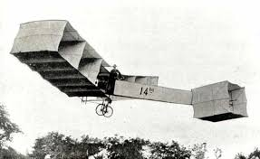

|
|
|||||||||
|---|---|---|---|---|---|---|---|---|---|
| Index | Introdução | Primórdio | Voo Motorizado | Guerra | Motor a Jato | Jumbo Jet | Tabela | Galeria | Sobre Mim |
A História da AviaçãoUma Jornada Detalhada pelos Marcos da Aviação Mundial |
|||||||||
|
A história da aviação narra um dos sonhos mais antigos da humanidade: dominar os céus. Desde os mitos de Ícaro até os primeiros balões que sobrevoam a Europa, o anseio de voar sempre estimulou a curiosidade e a engenharia. O século XX foi o marco transformador, convertendo o voo de um experimento audacioso em uma realidade prática e revolucionária. O primeiro voo motorizado deu início a uma corrida tecnológica que foi intensamente acelerada pelas duas Grandes Guerras, período em que a aeronave passou de um instrumento de observação para uma arma de combate estratégica. Esta linha do tempo mostra como, em poucas décadas, a criação do motor a jato e os progressos na aerodinâmica transformaram permanentemente a velocidade e a capacidade de alcance das aeronaves. |
||
|  |

|

|
|
Convidamos você a navegar por esta linha do tempo digital, que está organizada em períodos fáceis de seguir. Desde os icônicos planadores de Otto Lilienthal, passando pelas máquinas voadoras de Santos Dumont e os irmãos Wright, até os gigantes de eficiência e tecnologia de hoje, como o Airbus A350. Use o menu superior para saltar entre os marcos e explore a Galeria de Imagens para ter uma visão visual de cada era. Comece sua exploração na página de Introdução para entender o contexto completo da nossa jornada. |
||